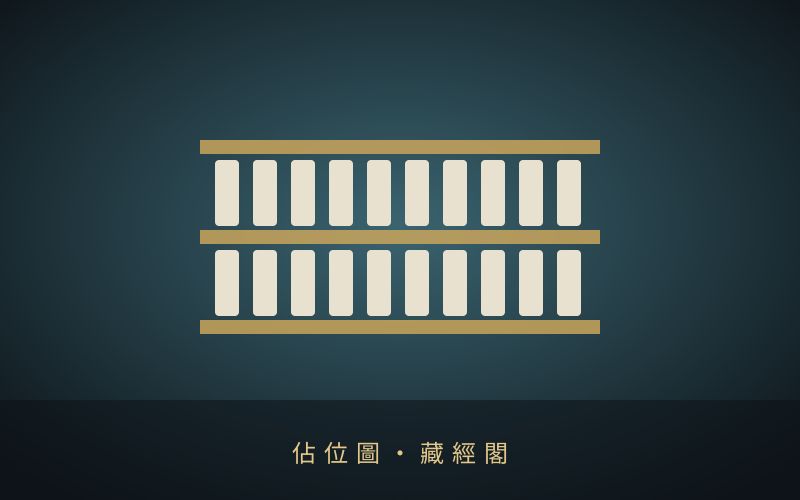
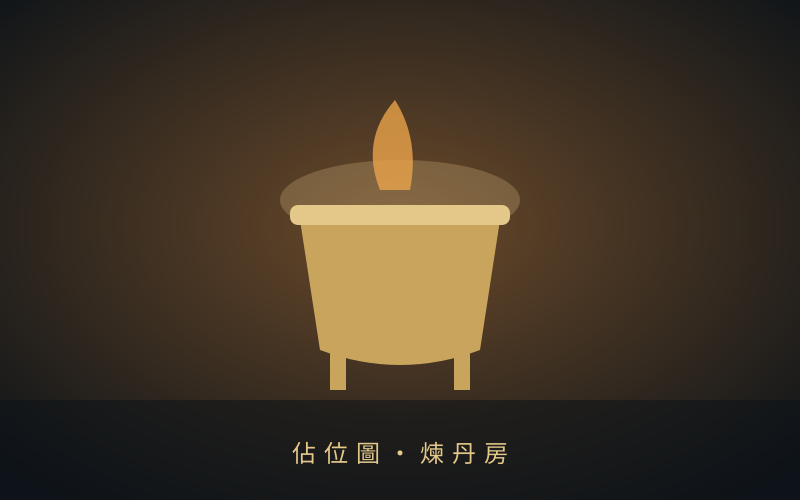
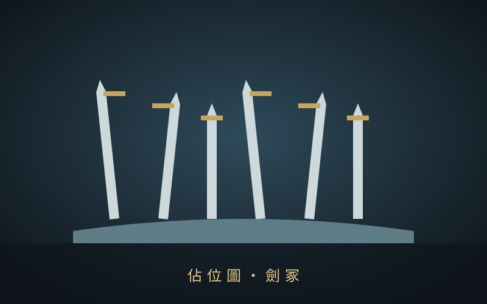

金環・道心圓滿
外圈金環象徵道心周而復始、圓融無缺，提醒弟子修行先求心正。
從一位散修的頓悟，到東域正道之首——這是雲霄仙宗的來歷與堅持。
萬年前，散修凌霄子獨上青嵐山脈最高峰——雲霄峰，於雲海之中靜坐九九八十一日，觀雲聚雲散而悟「萬法歸一」之理，自此劍、丹、陣三道融會貫通。
祖師飛升之際，以畢生所學凝成三卷玉簡留於峰頂，並留下一句話：「道不輕傳，亦不私藏。」後世弟子據此開山立宗，取名「雲霄」，以示不忘祖師悟道之地。

宗徽取自祖師悟道時所見的雲霄峰頂，三個圖形各有寓意。
外圈金環象徵道心周而復始、圓融無缺，提醒弟子修行先求心正。
青色山形即雲霄峰，代表祖師悟道之處，也代表宗門根基穩如山岳。
橫貫山腳的雲線，取祖師遺言「道不輕傳，亦不私藏」，喻傳承如雲，廣覆天下有緣人。
境界可以慢慢追，心性一旦走偏便難回頭。
弟子日常修行、取經、煉丹與悟劍之所。

收藏上古功法玉簡逾三千卷，弟子以宗門貢獻換取閱覽資格。

引地火為爐，丹脈弟子在此煉製築基丹、回元丹等常用丹藥。

歷代劍修佩劍長眠之地，劍意縱橫，劍脈弟子可入內參悟。
弟子依靈根擇道，由對應長老親自引領。
一劍可斷雲海，主張「劍隨心動」，教導弟子先養劍意、後練劍招。
識遍九州靈草，性情溫和，常言「丹藥救人，亦能害人」。
護山大陣的主持者，擅推演天機，授課以嚴謹著稱。